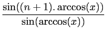
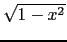
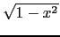

suivant: Base et réduction de
monter: Polynômes orthogonaux
précédent: Polynôme de Tchebychev de
Table des matières
Index
Polynôme de Tchebychev de 2-ième espèce : tchebyshev2
tchebyshev2 a comme argument un entier n et eventuellement le
nom de la variable (x par défaut).
tchebyshev2 renvoie le polynôme de Tchebychev de seconde espèce,
de degré n, noté U(n, x).
On a :
U(n, x) = 
ou encore
sin((n + 1)x) = sin(x)*U(n, cos(x))
U(n, x) vérifie les relations :
U(0, x) = 1
U(1, x) = 2x
U(n, x) = 2xU(n - 1, x) - U(n - 2, x)
Les polynômes U(n, x) sont orthogonaux pour le produit scalaire :
< f, g > =  f (x)g(x)dx
f (x)g(x)dx
On tape :
tchebyshev2(3)
On obtient :
8*x^3+-4*x
On tape :
tchebyshev2(3,y)
On obtient :
8*y^3+-4*y
en effet :
sin(4.x) = sin(x)*(8*cos(x)3 -4.cos(x)) = sin(x)*U(3, cos(x)).
Documentation de giac écrite par Renée De Graeve